CYLINDER BLOCK > REASSEMBLY |
| 1. INSTALL STUD BOLT |
Using an E8 "TORX" socket wrench, install the stud bolts.
| *A | Upper Side | *B | Lower Side |
| 2. INSTALL NO. 1 OIL NOZZLE SUB-ASSEMBLY |
| 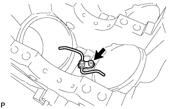 |
Using a 5 mm hexagon wrench, install the 4 No. 1 oil nozzles with the 4 bolts.
| 3. INSTALL PISTON WITH PIN SUB-ASSEMBLY |
| 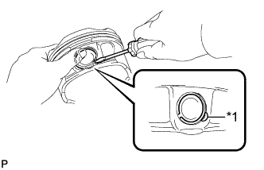 |
Using a screwdriver, install a new snap ring on one side of the piston pin hole.
| *1 | Service Cutout |
Gradually heat the piston to approximately 80°C (176°F).
Coat the piston pin and connecting rod with engine oil.
| 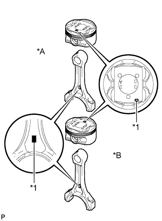 |
Align the front marks of the piston and connecting rod, insert the connecting rod into the piston, and then push in the piston pin with your thumb until the pin comes into contact with the snap ring.
| *A | for Bank 1 |
| *B | for Bank 2 |
| *1 | Front Mark |
Check the fitting condition between the piston and piston pin by trying to move the piston back and forth on the piston pin.
Using a small screwdriver, install a new snap ring at the other end of the piston pin hole.
| *1 | Service Cutout |
| 4. INSTALL PISTON RING SET |
| 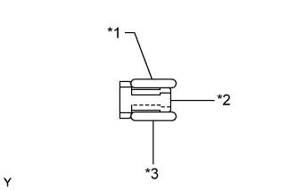 |
Install the oil ring (expander) and 2 side rails by hand.
| *1 | Upper Side Rail |
| *2 | Oil Ring Expander |
| *3 | Lower Side Rail |
| 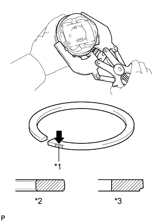 |
Using a piston ring expander, install the 2 compression rings with the painted mark on the right side.
| Item | Paint Mark |
| No. 1 | Blue |
| No. 2 | Orange |
| *1 | Paint Mark |
| *2 | No. 1 Compression Ring |
| *3 | No. 2 Compression Ring |
 | Right Side |
| 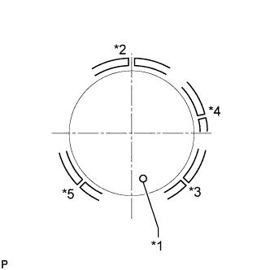 |
Position the piston rings so that the ring ends are as shown in the illustration.
| *1 | Front Mark |
| *2 | Upper Side Rail |
| *3 | Lower Side Rail |
| *4 | No. 1 Compression Ring |
| *5 | No. 2 Compression Ring |
| 5. INSTALL CRANKSHAFT BEARING |
| 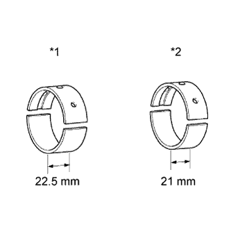 |
| *1 | No. 1 and No. 5 Journal Bearings |
| *2 | No. 2, No. 3 and No. 4 Journal Bearings |
Clean each main journal and bearing.
Install the upper bearing.
| 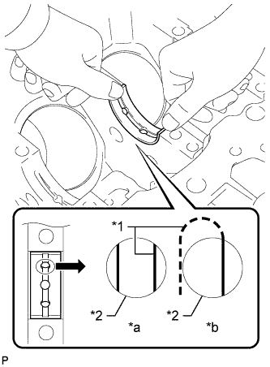 |
Install the upper bearing to the cylinder block.
| *1 | Oil Groove |
| *2 | Oil Feed Hole |
| *a | CORRECT |
| *b | INCORRECT |
Install the lower bearing.
| 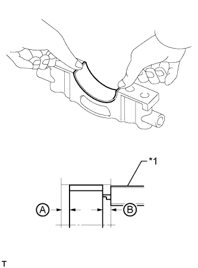 |
Install the lower bearings to the crankshaft bearing caps.
| *1 | Vernier Caliper |
Using a vernier caliper, measure the distance between the edge of the crankshaft bearing cap and the edge of the lower bearing.
| 6. INSTALL CRANKSHAFT THRUST WASHER SET |
| 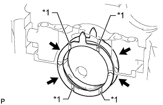 |
Apply engine oil to the thrust washer set.
| *1 | Oil Groove |
Install the 4 thrust washers to the No. 3 journal position of the cylinder block and bearing cap with the oil grooves facing outward.
| 7. INSTALL CRANKSHAFT |
| 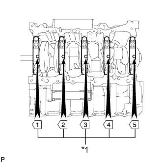 |
Apply new engine oil to the upper bearing and lower bearing, then place the crankshaft on the cylinder block.
| *1 | Number Mark |
Confirm the front marks and numbers of the main bearing caps and install the bearing caps to the cylinder block.
Apply a light coat of engine oil to the threads and under the heads of the bearing cap bolts.
Temporarily install the 10 main bearing cap bolts to the inside positions.
| 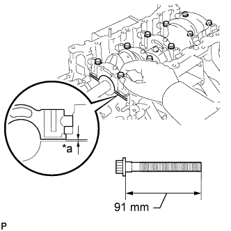 |
Insert the main bearing cap by hand until the clearance between the main bearing cap and cylinder block is less than 6 mm (0.236 in.) and partially tighten the 2 inner bearing cap bolts.
| *a | Less than 6 mm |
| 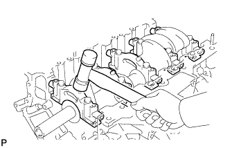 |
Using a plastic-faced hammer, lightly tap the crankshaft bearing cap to ensure a proper fit.
Apply a light coat of engine oil to the threads and under the heads of the 10 main bearing cap bolts.
| 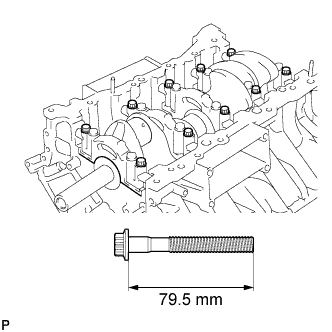 |
Temporarily install the 10 main bearing cap bolts to the outside positions.
Tighten the main bearing cap bolts.
| 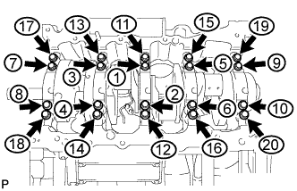 |
Step 1:
Uniformly tighten the 20 main bearing cap bolts in the sequence shown in the illustration.
Mark the front of the bearing cap bolts with paint.
Step 2:
Tighten the bearing cap bolts 90° in the order shown in step 1.
Check that the painted marks are now at a 90° angle to the front.
Check that the crankshaft turns smoothly.
| 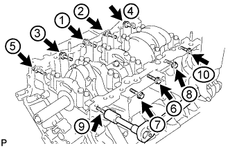 |
Install and uniformly tighten the 10 main bearing cap bolts and 10 new seal washers in several steps in the sequence shown in the illustration.
Check that the crankshaft turns smoothly.
| 8. INSTALL CONNECTING ROD BEARING |
| 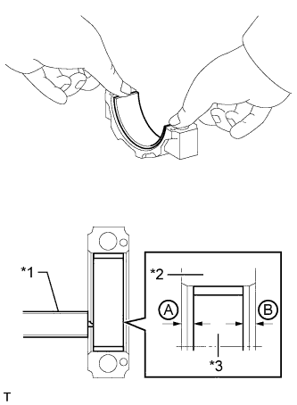 |
Install the bearing to the connecting rod cap.
| *1 | Vernier Caliper |
| *2 | Connecting Rod Cap |
| *3 | Connecting Rod Bearing |
Using a vernier caliper, measure the distance between the connecting rod cap edge and connecting rod bearing edge.
| 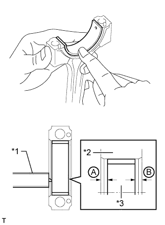 |
Install the bearing to the connecting rod.
| *1 | Vernier Caliper |
| *2 | Connecting Rod |
| *3 | Connecting Rod Bearing |
Using a vernier caliper, measure the distance between the connecting rod edge and connecting rod bearing edge.
| 9. INSPECT CRANKSHAFT THRUST CLEARANCE |
| 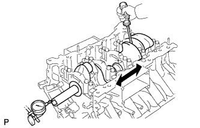 |
Using a dial indicator, measure the thrust clearance while prying the crankshaft back and forth with a screwdriver.
| 10. INSTALL PISTON AND CONNECTING ROD |
Apply engine oil to the cylinder walls, pistons and surfaces of the connecting rod bearings.
Check the positions of the piston ring ends.
| *1 | Front Mark |
| *2 | Upper Side Rail |
| *3 | Lower Side Rail |
| *4 | No. 1 Compression Ring |
| *5 | No. 2 Compression Ring |
| 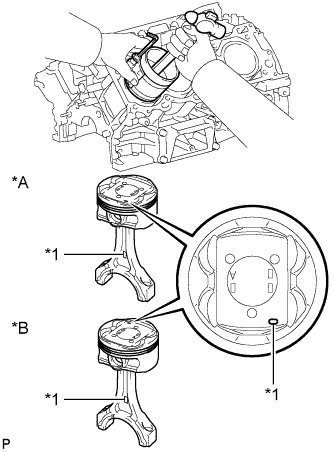 |
Using a hammer handle and piston ring compressor, press a piston and connecting rod assembly into each cylinder with the front mark of the piston facing forward.
| *A | for Bank 1 |
| *B | for Bank 2 |
| *1 | Front Mark |
Place the connecting rod cap on the connecting rod.
| 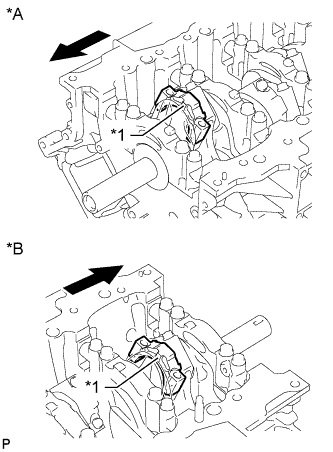 |
Match the numbered connecting rod cap with the connecting rod.
| *A | for Bank 1 |
| *B | for Bank 2 |
| *1 | Front Mark |
| Front |
Check that the front mark of the connecting rod cap is facing the proper direction.
| Item | Front Mark |
| LH | Front Side |
| RH | Rear Side |
Install the connecting rod cap bolts.
Apply a light coat of engine oil to the threads and under the heads of the connecting rod cap bolts.
Temporarily install the connecting rod cap bolts.
| 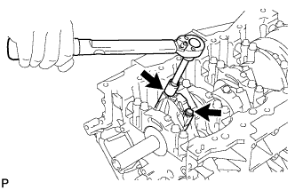 |
Step 1:
Install and alternately tighten the bolts of each connecting rod cap in several steps.
Mark the front side of each connecting rod cap bolt with paint.
Step 2:
Tighten the cap bolts 90°.
Check that the paint mark is now at a 90° angle to the front.
Check that the crankshaft turns smoothly.